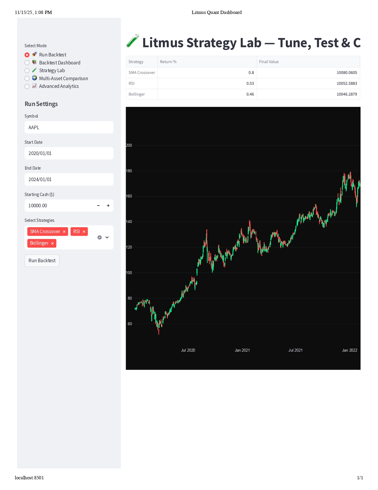
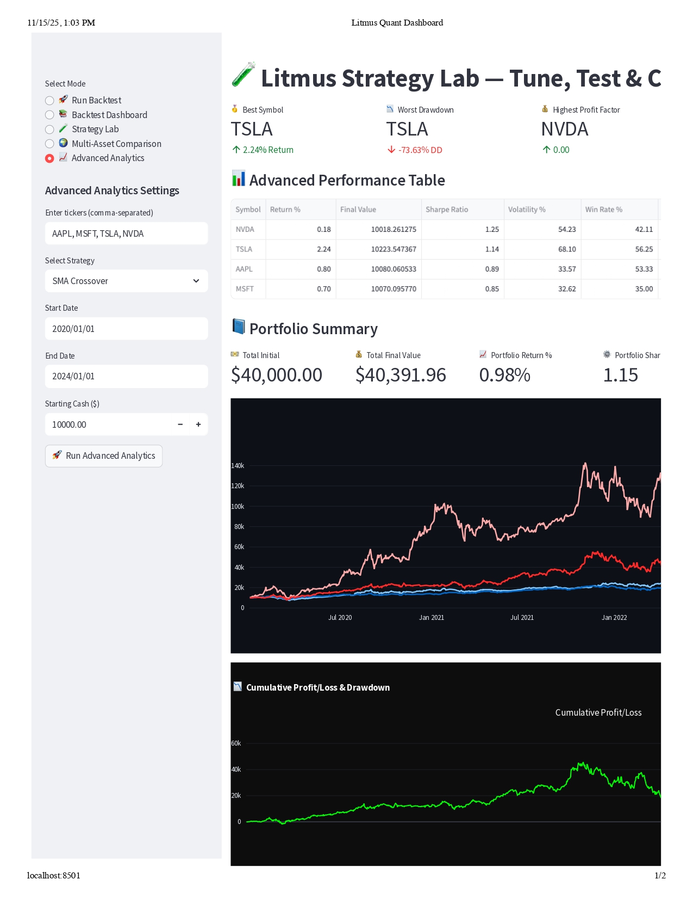

A multi-strategy algorithmic Trading Platform built using Python, Backtrader and Streamlit
This research presents the design and evaluation of the Litmus Quant Dashboard, an interactive web-based platform created for backtesting and live simulation of trading strategies using actual financial market data. The main goal was to offer both retail and professional users an easy-to-use and flexible space for testing and improving trading algorithms. This increases the clarity and effectiveness of strategy evaluation. The project combines important technologies, including Streamlit for a dynamic user interface, Backtrader as the simulation engine, Plotly for detailed data visualizations, and Yahoo Finance APIs for reliable historical market data access. The platform allows users to import and clean OHLCV (Open, High, Low, Close, Volume) data. It also supports analysis of both single assets and multiple assets. Users can set key parameters, run side-by-side backtests, and use strategy tuning tools to assess performance across different securities.
The application opens with this homepage
You can choose from a list of strategies to run. The actual backtesting framework is built on Backtrader, a powerful and flexible Python engine designed specifically for trading strategy research. The workflow follows a structured sequence: first, we load the cleaned data into the Backtrader environment. Next, we apply the chosen trading strategy, which defines the logic for entering and exiting trades. Backtrader then simulates those trades across the selected period, respecting the strategy rules, order types, and any risk parameters. After the simulation, we compute a set of performance metrics. These include total return, which shows the overall growth of the strategy; the Sharpe ratio, which measures risk-adjusted performance; and the profit factor, which highlights the balance between winning and losing trades. Additional statistics can also be generated depending on the user’s needs. Finally, all outputs are presented in a user-friendly Streamlit dashboard. This interface allows users to visualize equity curves, performance statistics, trade summaries, and charts—all in one interactive view. The goal is to provide a smooth, transparent, and intuitive experience from data collection all the way to strategy evaluation.
